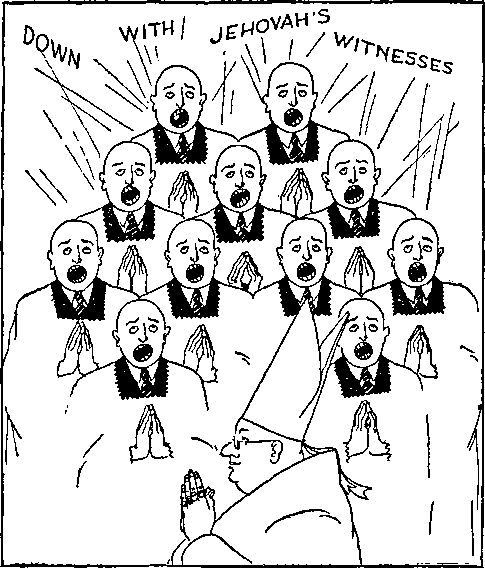

IIIIIIIIIIIIIIIIIIIIIIII1IIIIIIIIIIIIIIIIIIIIIHIIIIIIIIIIIIIIIIIIIIIIIIIIIIIIII
in this issue
HATERS OF GOD IN NEW JERSEY
ii:j:i!iii!iiiiiiiiiiiiimiiiiiiiiiiiiiiiiiiiiiiiiiiiiiiiiiiiiiiiiiiiiiiiiiiiii
every other
WEDNESDAY
five cents a copy one dollar a year Canada & Foreign 1.25
Vol. XVII - No. 439
July 15, 1936
..o-rg). ■ „ , , , ,gsu„
CONTENTS
••"O'----------—--■--■--------------------------------------------
Will Roosevelt Support the Roman Hierarchy? 643
An Important Interview with Judje Rutherford 648
Roman Catholic Hierarchy, Haters of God in
“Religion Is still free within our borders."
Published every other Wednesday by GOLDEN AGE PUBLISHING COMPANY, INC.
117 Adams Street, Brooklyn, N. Y., U.S.A.
Clayton J. Woodworth President Nathan H. Knorr Vice President
Charles E. Wagner Secretary and Treasurer
FIVE CENTS A COP5T
$1 a year, United States ; $1.25 to Canada and all other countries.
Notice io Subscribers
Remittances : For your own safety, remit by postal or express money order. When coin or currency is lost in the ordinary mails, there is no redress. Remittances from countries other than those named below may be made to the Brooklyn office, but only by international postal money order.
Receipt of a new or renewal subscription will be acknowledged only when requested. Notice of expiration is sent with the journal one month before subscription expires. Please renew' promptly to avoid loss of copies.
Send change of address direct to us rather than to the post office. Y’our request should reach us at least two weeks before the date of issue with which it is to take effect. Send your old as w’ell as the new address. Copies wdll not be forwarded by the post office to your new address unless extra postage is provided by you.
Published also in Bohemian. Danish. Dutch, Finnish, French, German, Greek, Japanese, Norwegian, Polish, Spanish, Stvedish.
British Canadian Australasian South African Entered as second-class
Offices for Other Countries
34 Craven Terrace, London, W. 2, England
40 Irwin Avenue, Toronto 5. Ontario. Canada
7 Beresford Road. Strathfield, N. S. W.. Australia Boston House, Cape Town, South Africa matter at Brooklyn, N. Y., under the Act of March 3, 1879.
Volume XVII Brooklyn, N.Y., Wednesday, July 15, 1936 Number 439
Read Carefully the Following
June 20, 1936
To the President
of the United States, Franklin D. Roosevelt, Washington, D. C.
Honored Sir:
In Re Freedom
of Religion and Worship
Your speech at Vincennes, Indiana, publicly delivered on the 14th day of June, 1936, is my reason for addressing this letter to you. In that speech, according to the Press, you said among other things the following :
“The ordinance of 1787 . . . went on to declare that— religion, morality and knowledge being necessary to good government and the happiness of mankind, schools and the means of education shall forever be encouraged. It seems to me that 149 years later the people of the United States in every part thereof could reiterate and continue to strive for the principle that religion, morality and knowledge are necessary to good government and the happiness of mankind. Today religion is still free within our borders; it must ever remain so. ’ ’
In connection with the ordinance of 1787 above mentioned it is appropriate here to call attention to the Declaration of American Independence, which recognized that the law of Almighty God is superior to the law of man, and that all men are endowed by their Creator with certain inalienable rights, which includes the right of worship of Almighty God in a manner consistent with one’s conscience.
That part of your speech, to wit, “Today religion is still free within our borders, ’ ’ is so contrary to the facts that I must call your attention to some of these facts, and I kindly request that you give serious consideration thereto, and that you take the necessary action within your power, as President, to remedy insofar as possible the present-day unjust and unhappy conditions which result from an ungodly persecution of honest, sincere Christians in America.
During the past five years the Roman Catholic Hierarchy and the agents thereof have carried on a malicious persecution of many American citizens because those citizens have worshiped Almighty God as He commands in His Word. You cannot be entirely ignorant of this fact. On the 26th day of June, 1932,
July 11, 1936
To the Golden Age Magazine, Brooklyn, N. Y.
Gentlemen:
Enclosed please find a copy of my letter to President Roosevelt. Three weeks have elapsed since the original letter was delivered to Mr. Roosevelt and to date I have no reply from him, and the letter is therefore released for publication and you are prlv-ileged to publish it.
I delivered a speech, which was broadcast by radio, on the subject of “Can the American Government Endure ? ’ ’ and to which speech you listened while at the executive mansion at Albany, according to your admission to a representative of the Watch Tower Bible and Tract Society. In that speech mention was made of the persecution of conscientious Christians, and that the persecution was incited, encouraged and carried on by clergymen who desired to keep the people in ignorance of the truths contained in the Bible. Shortly after your inauguration as president you made the following statement to a representative of the Watch Tower Bible and Tract Society : ‘ ‘ The men who are responsible for that persecution of Jehovah’s witnesses are now out of office. ’ ’
During your administration as president the Roman Catholic Hierarchy has wickedly and viciously carried on a campaign the purpose of which has been and is, according to their own language publicly uttered: “To drive Rutherford from the air.” That organization, which operates as a religious institution and is directed from a foreign country, has employed all manner of wrongful means to compel American radio stations to cancel contracts made with me, or the Watch Tower Bible and Tract Society, to broadcast my speeches. They have repeatedly threatened owners and managers of radio stations that if their stations did not cancel their contracts and cease to broadcast my speeches or programs of the Watch Tower Bible and Tract Society, they would do injury to such stations. All of such speeches so broadcast were in the public interest, and strictly confined to the worship of Almighty God as He has commanded. Many radio stations yielded to such wrongful influence and canceled their contracts because of such threats.
So glaringly vicious and wrongful has that campaign been carried on by the Roman Catholic Hierarchy that in 1934 a Petition, signed by two and one-half million American citizens, was filed with the Congress demanding that proper action be taken to
protect the interests of broadcasters and the people. Congressional Hearings were had on this Petition in March, 1934, on H.R. 7986, and in May on H.R. 8301, at which Hearings an abundance of proof was submitted showing the wrongful interference with radio stations by the Roman Catholic Hierarchy and its agents. The Congress, at your request, disregarded that petition of two and one-half million American citizens; did nothing for the relief of the people as therein asked; and to this day nothing has been done, and the Roman Catholic Hierarchy, with the apparent approval of the government, continues its campaign of persecution and interference with radio stations and broadcasters.
You caused the Federal Communications Commission to be created and appointed the members of that Commission. Thereafter a Hearing was had by the FCC, at which Hearing further evidence was introduced showing conclusively the activities of the Roman Catholic Hierarchy wrongfully interfering with radio stations and broadcasters, and particularly with their wrongful effort to prevent programs of the Watch Tower Bible and Tract Society to be broadcast. Evidence was also there introduced which strongly tended to prove that a certain Catholic priest had willfully mutilated the public record of a Hearing before Congress. The record of this Hearing is now on file with the Federal Communications Commission. No action has been taken to punish such violator of the law, or to check the Roman Catholic Hierarchy in its work of interfering with the freedom of speech and the free exercise of worship of Almighty God by use of the radio or otherwise.
A member of the Federal Radio Commission, during the year 1933, acting in his official capacity, wrote letters to various radio stations in the United States in an effort to intimidate those stations and to prevent them from broadcasting Bible lectures given for the instruction of the people concerning the Holy Scriptures, and did so because the Roman Catholic Hierarchy objected Io such speeches. A number of radio stations, yielding to such improper influence, did decline to further broadcast, and to this day decline to broadcast, such programs for hire.
On June 2, 1935, I delivered a public address at Washington, D.C., before a visible audience of twenty thousand persons, and which speech was broadcast throughout the land. There was a strong demand for the publication of that speech in the Press. The Washington Post and the Washington Star both engaged to print the same. Both papers accepted the copy, set it in type, made up the forms, and were ready to go to press; both papers had received full pay for such space at advertising rates, and had given receipts therefor. At the moment of going to Press both papers, under the strong pressure exercised by the Roman Catholic Hierarchy, and a member of your official cabinet, broke their contracts, and refused to publish because the speech given referred to some indisputable facts concerning the wrongful influence of the Roman Catholic Hierarchy with the political affairs of America. No one but the Hierarchy could object, and no one did object to the publication except them.
On February 23, 1936, I delivered a public address at the Shrine Auditorium, Los Angeles, and a large number of radio stations contracted to broadcast that speech and many of them did broadcast it. The Roman Catholic Hierarchy conspired to prevent radio stations from broadcasting that speech and succeeded in preventing some in so doing. I cite this specific case:
Cardinal Dougherty and James J. Clarke and others entered into a conspiracy to prevent radio station WIP of Philadelphia from broadcasting that speech. They addressed letters to said radio station, its manager and owner, and threatened Gimbel’s Department Store, the owner of the station, that if the station broadcasts Rutherford’s speech or Watch Tower programs, a boycott would be carried on against the store and station. Further, said Cardinal Dougherty publicly declared that if that threat of boycott was not sufficient to prevent the broadcasting of Rutherford’s lectures he, the cardinal, would take more drastic action. That conspiracy succeeded and induced radio station WIP to cancel its contract and to refuse to broadcast Bible lectures of myself, sponsored by the Watch Tower Society. That specific case of conspiracy is a clear violation of Section 51, Title 18, of the Federal Penal Code, and the conspirators therein mentioned are guilty of an indictable offense.
J. Wesley Weekes, senior counsel of the Broadcasting Division of the FCC, gave notice in November, 1935, to radio station WRBL, Columbus, Georgia, that said station should not broadcast Rutherford's speech, which speech was entirely devoted to Bible instruction and teaching in matters of vital importance to the people.
The above are a few of a great number of like offenses committed by the said Hierarchy in interfering with the freedom of speech and freedom of worship of Almighty God, and which action is contrary to the fundamental laws of the nation; and which shows that your statement at Vincennes, Indiana, is not in accord with the facts. Many other cases will be brought to your attention upon request.
The Roman Catholic Hierarchy claim that the Mexican government was persecuting their church and people in that land. A Resolution was introduced in the United States Senate, calling on the American government to intercede in behalf of the Catholic people of Mexico; but nothing has been done in behalf of the millions of American citizens, who have been cruelly persecuted by the Roman Catholic Hierarchy, and solely because faithful Christians have stated their honest and sincere understanding of the Scriptures.
In the Hitler government of Germany thousands of true Christians are subjected to severe punishment because of their faith in God’s Word. The United States is not far behind Germany in this respect. During the past five years in the United States, and at the instance of the Roman Catholic Hierarchy, thousands of American citizens have been wrongfully arrested, fined, imprisoned, and otherwise eruelly treated because they have exercised their right of freedom of worship of Almighty God as He has commanded, and as guaranteed by the laws of the land. From October 1, 1935, to June 17, 1936, eight hundred and seventy men and women have been arrested and thrown into prison, their only offense being that of preaching the gospel of God’s kingdom in obedience to the commandments of Almighty God, as stated in the Bible. Such arrests have taken place in seventeen different states.
Jehovah’s witnesses are not a cult or sect. They are true followers of Christ Jesus, who worship Almighty God in spirit and in truth by obeying His commandments. According to the Scriptures every person consecrated and devoted to God and His kingdom under Christ must be a witness to the name and kingdom of Jehovah, and for that reason these Christians are properly called Jehovah’s witnesses or witnesses of the Lord God. (Isaiah 43:10-12; Isaiah 62:2; Matthew 24:14) Jehovah God commands that His witnesses must give notice and warning to the people as set forth in the Bible, and that their failure to obey will bring upon them the condemnation of the Lord. (Ezekiel 33:7-12; Acts 3:23) These true followers of Christ Jesus are acting strictly according to the commandment of Almighty God and plainly within their rights under the laws of America. But their rights are being grossly denied, their freedom of speech and freedom of worship violated and interrupted, and they suffer persecution at the hands of the Roman Catholic Hierarchy, and their agents, because they are obeying the commandments of Jehovah; and the present government has winked at such wrongful doings; and in the face of it you still say: “Religion is still free in America.”
More evidence: A few specific instances are here cited. The town of Secaucus, New Jersey, in open violation of both the federal and state constitutions, did on February 25, 1936, enact an ordinance which prohibits the handing of a piece of paper to a resident of the town. At the time of the enactment of that ordinance it was announced by members of the town council that it would be enforced only against Jehovah’s witnesses. That announced purpose has been carried out. Catholics and Baptists distribute their literature in that town without interference, but Jehovah’s witnesses have been arrested and fined for merely handing to a resident a slip of paper announcing a radio lecture on the Bible. This wrongful action was taken at the instance of the religious priest, who conspired with others to prevent the freedom of speech and freedom of worship of Almighty God.
Maplewood, New Jersey, moved by the same Roman Catholic influence, recently enacted an ordinance to restrain the activities of Jehovah’s witnesses in preaching the gospel of His kingdom under Christ Jesus by means of the printed message. That town of Maplewood sent letters to other towns recommending that the other towns enact similar ordinances and for the same purpose. Irvington, New Jersey, and Livingston, New Jersey, followed that advice, enacting such ordinance against Jehovah’s witnesses.
At Irvington, New Jersey, eight of Jehovah’s witnesses were arrested for calling on people with a message of God’s kingdom as set forth in the Bible, and which they did in obedience to the commandment of Almighty God. When arrested excessive bail was required of them. More than Seventy Thousand Dollars in value of real estate was offered as bail security and refused, the excuse being made that it was not owned by thirteen different persons. All this was done at the instance of the Roman Catholic Hierarchy and its agents. The Catholic judge before whom these defendants were brought viciously declared: “I will stab Jehovah’s witnesses in the back at every opportunity.” The same judge sent two small children to the juvenile court for trial on a charge of delinquency and held their parents in bonds of One Thousand and Fifteen Hundred Dollars, respectively. Their delinquency consisted in preaching the gospel of God’s Kingdom and worshiping Him, as guaranteed by the fundamental law of America, and as commanded in the Bible.
At Orange, New Jersey, twenty-four of Jehovah’s witnesses were sentenced to pay a fine of One Hundred Dollars each, and imprisonment for thirty days. Ten others to pay a fine of One Hundred Dollars each. The offense of these Christians was the handing of one piece of printed matter to another person in town, which printed slip of paper contained information concerning the Bible and its teachings. Here Roman Catholic Hierarchy influence was employed to intimidate citizens and prevent them from signing appeal bonds in behalf of the defendants.
At Maplewood, New Jersey, a petition, addressed to the town commissioners asking for repeal or amendment of an ordinance under which Jehovah’s witnesses had been wrongfully arrested and persecuted, was being circulated. For the offense of circulating this petition nine persons were arrested and imprisoned.
At Monessen, Pennsylvania, one hundred and forty-six of Jehovah’s witnesses were arrested and imprisoned for circulating a similar petition addressed to the city council. No trial was held, no evidence was offered, and yet a Roman Catholic judge entered a fine against each one of the one hundred and forty-six defendants.
At Lagrange, Georgia, the mayor, chief of police and city attorney conspired together to arrest, beat and expel Jehovah’s witnesses from that city. Those officials led a mob that seized, struck and abused and arrested men and women who were doing nothing, but who had in their possession a petition intended to be circulated among the people asking for fair treatment by the officials of the city. Women were held in prison and compelled to sleep on bare floors; some of these with babes in their arms, and some who fell very ill by reason of such treatment. Against those women no charge was ever filed. When released they were required to leave the city, although they had committed no offense whatsoever. At the same time men, who had committed no offense against the law, were confined in concentration camps, and compelled to sleep on the bare ground exposed to the weather. They bad gone to the city merely to exercise their Godgiven right of helping the people to understand the Scriptures and to thereby worship Almighty God. The city officials arrested and dragged them from their automobiles, and severely beat some of them, and drove them out of town. All of such conduct was and is an open and flagrant violation of the federal laws. “Religion is still free in America.”
In Pennsylvania, children of Jehovah’s witnesses have been abused and severely beaten for no reason under the sun save that they are the children of parents who insist on worshiping Almighty God as they believe is their right.
It is a frequent occurrence for policemen who make these arrests to say to the defendants: “We don’t want to make these arrests, but we have our orders from the higher-ups, and we must obey them or lose our jobs.” The higher-ups, particularly in the cases in New Jersey, are cardinals, priests and bishops of the Roman Catholic Hierarchy. Many of these persons are convicted and imprisoned without any evidence to support the charge whatsoever. Their property frequently seized and confiscated many of them are held in prison ineommunieado, not even their friends being able to find out where they are. That sounds very much like Hitler’s crowd in Germany. Men, women and children are crowded into filthy jails. Many of them are tried before prejudiced judges. Many of them are tried and fined in their absence. These cases are too numerous to cover in a letter, but proof can be furnished at any time upon request.
Please know, Mr. President, that I am not against any person because of his religion or faith. Catholics, Protestants, Jews or those of any other religious faith should enjoy equal rights of worship as they desire and which they are guaranteed by law. Jehovah’s witnesses have the God-given and Constitutional right to speak the truth as commanded by the Bible and as written therein, and that without permission being given by anyone, and without let or hindrance by men or any combination of men. I am asking no favor for myself or my fellows, but I am bringing these matters to your attention that you may clearly see and be convinced, if you will, that American citizens are being denied their fundamental rights as guaranteed by the law. Certainly a foreign power, operated in the name of religion and directed from Rome, has no right to interfere with the freedom of worship by American citizens within the land which has always held sacred the freedom of speech and freedom of worship.
The Roman Catholic Hierarchy is today using every possible means to gain control of the American government and to rule it as Germany is now ruled. They arc operating through the schools, private and public, and through every branch of the political organization of the government. You can certainly not be entirely ignorant of that fact. In a book recently published by E. Boyd Barrett, the title, Home Stoops to Conquer, the author, a former Jesuit, submits an abundance of proof showing that it is the purpose of the Roman Catholic Hierarchy to gain control of America and to compel the people to be submissive to its religious and political harsh rule.
The book published by The Fellowship Forum at Washington, Proof of Rome’s Political Meddling in America, sets forth a great deal of authentic evidence taken from the official records of the Hierarchy itself, and which discloses the purpose of the Hierarchy to seize the American government at the first opportunity ; and also discloses that the Hierarchy is completely out of accord with the American principles of government. From the report of the chairman of the Administrative Committee, National Catholic Council, the following is quoted:
‘ ‘ The Executive Department supervises the co-ordinated activities of the other departments. It keeps in direct personal touch with the officials of the Government from the President and Cabinet members to members of Congress. . . . We have found, as we stated in our report of last year, an even more constant, more vital need of keeping in close touch with the Federal Government, not alone on technical legislative matters, but also on those manifold questions that precede legislation, and the right handling of which means a personal acquaintance and touch with the officials of government.”
John B. Harney, one of the “Paulist Fathers”, had put to him a question, and answered it, which appears in the publication of the Washington Fellowship Forum, May 1934, to wit: “Does the Roman Catholic Church regard Protestants as heretics, and does it not believe and teach that heretics should be punished, even unto death, if necessary?” Answer: “In a way, I say, Yes. ... I do not doubt, if they were strong enough, that the Catholic people would hinder, even unto death, if necessary, the spread of heresy through the people, and I say rightly so. ’ ’
Catholic papers in the United States have boasted that the pope of Rome is the author of the NRA blue eagle. On March 8,1934, the New York Sun published a dispatch from Rome, stating that, “A definite agreement had been reached between President Roosevelt and the Vatican, to the effect that diplomatic relations shall be established between the United States and the Holy See as soon as public opinion in America might be brought around to it.”
A great majority of the American people desire to preserve the freedom of speech and freedom of worship of Jehovah God and that without interference. They do not want America to be Hitlerized and to be ruled by a harsh, cruel, arbitrary and ungodly power. Seeing the tendency in that direction they are deeply concerned as to what may come to pass within a short time.
In view of your Vincennes speech, and of the further fact that you are asking the American people to again make you their Chief Executive; and in view of the wrongful activities of the Roman Catholic Hierarchy in the political and other affairs of the nation, and of their interference with the liberties of American people in matters of freedom of speech and freedom of worship, it is my privilege in behalf of many American citizens, who love truth and righteousness, to propound to you a few questions. As a servant of the American people it is your privilege and solemn duty to frankly and clearly answer those questions. Will you please give consideration to and answer the following ?
First : If the evidence is laid before the Department of Justice, showing that Cardinal Dougherty and others have conspired together to deprive and have deprived American citizens of their rights guaranteed by the Constitution of the United States, will you, as the Chief Executive, direct the Legal Department of the Government to prosecute such conspirators under the Section of the Penal Code above mentioned, and see to it that adequate punishment is administered as provided by law?
Second: Will you use your power and influence to have the Congress to fully investigate and to report the activities of the Roman Catholic Hierarchy and their agents in their wrongful attempts to compel owners of radio stations to broadcast only what pleases them and to refrain from broadcasting any Bible truth that may “shock the religious susceptibilities” of such clergymen? And will you advise the Congress to enact the necessary laws to prevent such wrongful interference with radio stations and broadcasters in their broadcasting of programs that many of the people desire to hear, and which programs are of public interest, convenience and necessity for the uplifting of the people, mentally, morally and spiritually?
Third: Shortly after your election you endorsed the so-called “Holy Year”, which failed to bring the blessings promised by the pope, but which deceived many people. If you are again elected will you continue to thus co-operate with the Roman Catholic Hierarchy?
Fourth: Is it your purpose to arrange for and establish diplomatic relations between the United States and the Vatican at Rome, and will your reelection be sufficient evidence to you that the American people have been brought around to see that such diplomatic relationships and receiving of an ambassador from the Vatican is right and proper?
Fifth : Do you approve of the prosecution and persecution by the Roman Catholic Hierarchy that is being carried on throughout the country against Jehovah’s witnesses, who serve and worship Jehovah God in spirit and in truth?
Sixth : Do you favor the American people being governed by the Roman Catholic Hierarchy and their agents and ruled with arbitrary power, directed from Rome, which now controls Germany? and if not, will you appoint a postmaster general who will refuse to use his official power in behalf of the Roman Catholic Hierarchy, and who will deal justly and fairly with all the people?
Seventh: If, Mr. President, you will kindly answer these questions, your answer together with this letter will receive wide publication that the people may know exactly what are your sentiments concerning these important matters. If you choose to ignore this letter, and decline to answer, then the letter will be duly published.
May I remind you in harmony with the plain declaration of the Holy Scriptures that he who willfully opposes or persecutes consecrated persons because those persons are actively engaged in proclaiming the Word of God and His kingdom, that such opposition and persecution is fighting against God. Furthermore that any political power that winks at, encourages, condones or participates in such opposition or persecution is a party to wrong doing and in due time must answer to Almighty God for such wrongful action. Pleading for unity and harmony amongst the religious organizations will not excuse or palliate that crime.— Ezekiel 3:18,19; Ezekiel 33:12-15; Matthew 25:31-46.
Regardless of the sincerity of men in their efforts to bring forth remedies to relieve the distress of the people, none of such human remedies can wholly succeed, for the reason that the Kingdom of God under Christ Jesus is the only hope of the nations of earth. (Matthew 12:18-21) To oppose the work of bringing to the people the information of God’s provision for them is ‘turning the stranger away from his right’; and God is against all such. (Malachi 3:5) If the work now being carried on by Jehovah’s witnesses in bringing these truths to the attention of the people “ be of men, it will come to nought; but if it be of God ’ ’ it cannot be overcome, and those opposing and seeking to prevent such proclamation of truth will find themselves ‘fighting against God’.—Acts 5:38, 39.
This letter, Mr. President, is written that these matters may be brought to your attention, and with that my responsibility in this behalf ends.
Very sincerely,
THE GOLDEN AGE directs attention to the J- fact that the Roman Catholic Hierarchy continues to use coercion and threats to boycott and other wrongful means to induce the radio stations to refuse to broadcast speeches of Judge Rutherford on Bible questions. Recently the cardinal at Philadelphia, by threats to use drastic methods against radio station WIP, induced that station to cancel its contract with the Watch Tower to broadcast Judge Rutherford’s speeches, which it had been broadcasting for a long period of time. Catholic publications now state that the reason for such protest against Judge Rutherford’s speeches is that he misrepresents the teachings of the Catholic church and foments religious hatred and bigotry. Recently a petition has been signed by a great many people in the vicinity of Philadelphia calling upon radio station WIP to continue to broadcast Judge Rutherford’s lectures and to arrange for a joint debate between some prominent Catholic and Judge Rutherford that the people may determine whether he is misrepresenting their teachings or the Catholic church is teaching that which is not true.
A representative of The Golden Age interviewed Judge Rutherford as follows:
Question : Is it true that you misrepresent the teachings of the Catholic church and that you thereby foment hatred and bigotry?
Answer : That statement is not true. I have never misrepresented the teachings of the Catholic church. I have no reason to misrepresent them. I am not trying to induce the people to
(Continued on page 650)
*The heart of every true American, every libertylover, every truth-lover, and, above all, every lover of Jehovah, the true and living God, will quicken as he reads the contents of this number.
First to engage his attention will be Judge Rutherford’s kind and manly letter to President Roosevelt, and then this equally manly offer to discuss openly his differences with the Hierarchy. If it be true that he “misrepresents the teachings” of the Roman Catholic church and “foments religious hatred and bigotry”, then by all means let the Roman Catholic Hierarchy present their side of the question, not in a sneaking, underhanded manner, but in the open, where all may hear what they have to say, and all may hear what Judge Rutherford has to say in rebuttal.
Second, the reader will be interested in the letters of the Reverend James J. Clarke, pastor of the Church of Our Lady of the Blessed Sacrament, Holy Ghost Fathers, 714 North Broad St., Philadelphia, Pa., seeking to prevent public discussion of public questions of greatest importance over the radio station of Gimbel Brothers, WIP, Philadelphia, Pa., and to deprive Judge Rutherford of the right of free speech.
Third, the reader will note with interest that on a plain sheet of paper the same James J. Clarke, same handwriting, same address, but with no “Reverend” before his name, or anything to indicate his business connections, asked for himself the address which he did not wish any of his flock to hear.
Fourth, on this page (648) the reader will see the proof that the course of James J. Clarke in writing the letter marked “a” (400,000 copies of which were placed in the homes of Philadelphians) has the approval of Dennis Cardinal Dougherty and of his chancellor, J. Carroll McCormick.
Fifth, on page 650 is a copy of the Petition to Gimbel Brothers, WIP, now being widely circulated and signed in the territory served by WIP.
Sixth, on pages 656-657 is a cartoon to the same effect.
Seventh, on pages 651-655 and 658-671 is the proof that “all that will live godly shall suffer persecution”, and that the greatest haters of God and of the truth on earth are the Roman Catholic Hierarchy. The story is too large to crowd into one issue, and will be continued in the next number.
CHANCERY OFFICE 1712 Summer Street Philadelphia
April 30, 1936.
TO WHOM IT MAJ CONCERN:
Having consulted His Eminence, Dennis Cardinal Dougherty, regarding the letter of Rev. James J. Clarke, C. S. Sp., rector of the Church of Our Lady of the Blessed Sacrament, Philadelphia, he informed me that this letter has his entire approval, and that His Eminence joins in the protest; moreover, that he will take further and more drastic action if the broadcasting of Judge Ruttierford is permitted to continue.
Dennis Cardinal Dougherty is Archbishop of Phu.a.iphi.,
JS CHANCELLOR
Archdiocese of Philadelphia.
400,000 copies of the above letter were placed in the homes of the people of Philadelphia and Camden by Jehovah’s witnesses.
(The following request was received nt the Philadelphia
address of Jehovah’s witnesses)
(Continued from page 648) join some organizations, nor to become followers of myself or any other man. My sole purpose is to aid the people in studying the Bible that they may gain a knowledge thereof, because the Bible is the true and only safe guide for mankind.
Q. Some of the doctrines taught by the Roman Catholic church are these: That every man has an immortal soul and therefore he does not die; that at the moment of so-called “death” the soul of man passes on to purgatory, hell or heaven; that prayers of Catholic priests may, on behalf of those in purgatory, result beneficially to the one in purgatory. Do you contend that these doctrines are taught in the Bible ?
A. The teachings or doctrines which you just mentioned do not find any support in the Bible whatsoever and therefore of necessity are false.
Q. The C a t h o 1 i.c church also teaches the doctrine of the “holy trinity”, that is, God the Father, God the Son, and God the Holy Ghost, and that the three are one. Does the Bible support that doctrine ?
A. It does not.
Q. The Catholic church also teaches that Peter was the first pope, the foundation of the church, and that the men who have occupied the office of pope since the death of Peter are the successors of Peter, with the same authority Peter had; that Peter is the rock on which the church was built and that the Roman Catholic church is that divine institution. Does the Bible support those doctrines ?
A. It does not.
Q. Would you be willing to publicly debate these questions in an effort to prove to the people that the foregoing doctrines are not supported by the Bible, provided some prominent Catholic official will take the other side of the debate ?
A. Yes, I will be glad to do so.
Q. The Golden Age is advised that a petition is being circulated, asking radio station WIP to arrange for such a debate. Are you willing to take one side of it and use the radio to broadcast the debate?
PETITION
To Gimbel’s radio station WIP, Philadelphia:
The undersigned consistent listeners to your radio station have, for a long while, very much enjoyed your broadcasts, Including speeches by Judge Rutherford In Watch Tower programs. Now we are Informed that WIP no longer broadcasts those speeches because of strenuous protests to you by high officials of the Roman Catholic church, and that those protests are based upon the claim that Judge Rutherford “misrepresents the teachings of that church and foments religious hatred and bigotry”.
Many believe that Judge Rutherford does not misrepresent the teachings of any organization. Since Catholic officials object, why not have their teachings discussed publicly and broadcast by WIP, Judge Rutherford taking one side, and some high Roman Catholic official the opposite side? Surely there is nothing of greater public interest, convenience and necessity than the teachings of the Bible concerning the salvation of humanity, as that is the question involved. Every fair-minded person is vitally interested. We therefore petition you and hope you will arrange for such public discussion and also continue Judge Rutherford’s broadcasts on WIP.
A. Yes, I am willing to do so; and whatever expense is attached thereto, I am certain my friends will provide one-half that expense, the other half to be supplied and paid by representatives of the Catholic church.
Q. Would you please submit some propositions that you are willing to debate ?
A. I suggest the following:
(1) Resolved, That the doctrine of purgatory, as taught by the Catholic church, finds no support in the Bible or Holy Scriptures, and that such doctrine is therefore false, misleading, and works injury to the people. I am willing to take the affirmative of that proposition.
(2) Resolved, That the spiritual supremacy resides in the pope of Rome as the successor of the apostle Peter, who was the first pope, and who is the foundation stone of the Catholic church. This proposition will be supported by the representative of the Catholic organization, and I will take the negative, because such teachings by the Catholic church find no support in the Bible.
(3) Resolved, That the doctrine of the “Holy Trinity”, as taught by the Catholic church, finds no support in the Bible. I will take the affirmative of that proposition.
(4) Resolved, That the teachings of the Catholic church that it is proper to call the pope “Holy Father”, and other priests by the name “Father”, and that the pope properly exercises temporal power, find no support in the Bible. I will support the affirmative of that proposition.
(5) Resolved, That the Catholic church is the church of God as taught by the Bible or Holy Scriptures. That, of course, will be affirmed by the representative of the Catholic church and I will take the negative.
HATERS OF GOD in Germany • Quebec NEW JERSEY
IN Judge Rutherford's latest and best and most timely of all books, Riches, he said:
The Roman Catholic Hierarchy not only is a friend of the world of Satan, but forms an integral part thereof, and for that reason alone that wicked organization could not represent God, but is in fact God’s enemy. . . . That the Roman Catholic Hierarchy constitutes the modern Philistines, and is the chief enemy of God and his kingdom, there is not the slightest doubt. (Page 257)
Why is it that the Roman Catholic Hierarchy, in every country, is bitterly opposing Jehovah’s message of the kingdom? The answer is, because that devilish institution is vexed at the message of God’s Word, which is being declared by his witnesses and which exposes its very hiding place, which is the great mountain of lies. (Page 266)
So you won’t Heil Hitler’
At the instance of the Roman Catholic Hierarchy Jehovah’s witnesses arc now being cruelly persecuted in all parts of “Christendom”, and particularly in Austria, Germany, Estonia, Quebec and New Jersey. In the abovementioned foreign countries books of the Watch Tower Society, because they explain the Bible, have been seized and destroyed, and many of Jehovah’s witnesses, the true followers of Christ Jesus, are charged with ‘ ’ seditious conspiracy ’ ’ and thrown into prison because they had in possession or distributed such books, and all this wicked persecution of faithful witnesses of Jehovah is done by those who claim to be the “successors of the apostle Peter” and the official representatives of God and Christ on earth. Amazing hypocrisy! This persecution the modern Philistines carry on against Jehovah’s witnesses “by revenge” and “with a despiteful heart” and “hatred”, exactly as the ancient Philistines did against God’s chosen people in Palestine.—Ezekiel 25:15. (Pages 254-255)
The Argentinisclies Tageblatt, a German paper published in Buenos Aires, Argentina, under date of April 5,1936, contained nearly a page on the persecutions of Jehovah’s witnesses in Germany, making a heartrending story fully as bad as anything that happened in the days of Nero.
Across the top of the page are spread in large type the words “Priigellager Sachsenburg” (Flogging-Camp Sachsenburg) and another headline across the page, “Auspeit-schung von Ernsten
Bibelforschern” (Beating of Jehovah’s witnesses). The account is lengthy, so readers will accept a much condensed review, in English:
Lashing was always one of the means of torture used in that notorious prison camp, especially since the former SA guards (Schutz-Abteilung, or ordinary Nazi guards) were replaced by SS-men (guards from the Schutz-Staffel, or picked Nazis). All night long one could hear the piteous cries of pain of some mistreated men. But since April 1, 1935, the day of the official introduction of the new camp rules and penal code, such floggings have become official and public acts. (The Manchester Guardian published, in June, 1935, the complete text of those regulations.)
Responsible for the enactment of corporal punishment is Hitler’s special commissioner of all concentration camps in Germany. His name is Eicke. The new commanding officer of the camp in Sachsenburg is SS-Obersturmbannfuehrer Schmidt. His broad breast has hardly room for all his medals. He is bestially brutal, often intoxicated, calls the prisoners “swine” and told them at the first roll call, when he presented himself, that he had come to treat them brutally and mercilessly and that he does not care a thing if they all “peg out” under the hand of the beaters. And then he gave them a warning example by the demonstration of a heartless flogging.
Since May 8,1935, when four prisoners were beaten, such public punishments have become the rule. Every week there was at least one, and often there were two or three. The harrowing and appalling spectacle was usually like this:
Evening of May 8, 1935. The three companies of prisoners formed a wide square. Expecting the revolting spectacle of the flogging might incite them to a desperate rebellion, they were surrounded by two formations of SS-men in steel helmets, armed with rifles, held at the ready; besides, heavy machine guns were posted at strategic points. The windows of the building at the opposite side were full of other SS-men, who were off duty, but did not wish to miss the “elevating” spectacle of a public flogging. At the open side of the square formation appeared the commanding officers of the prison camp, amongst them a certain Weigel, a notoriously bad man, and also the camp physician, Dr. Gebhardt, all in full regalia with steel helmets, side arms and revolvers.
The victims of their sadistic lust were four prisoners, two of them members of the “Bible Students”, or “Jehovah’s witnesses”, as they now call themselves. Their “crime” was that they had steadfastly refused the Hitler salute. As reason for their refusal they stated: ‘ ‘ There is only one God; His name is Jehovah. We hail only Him, but no worldly power, and also not Hitler.” They were formally charged with repeated refusal of the military salute, insubordination and contempt of the State. The other two delinquents were charged, one of them with smoking at a forbidden place, the other with ridiculing the State. And for this they received the inhuman verdict of fourteen days’ dark cell with 25 lashes before and 25 lashes after imprisonment.
In the midst of the square there was placed a threshing table. The names of the four victims were called; they came forward and stood before the table. A command sounded, and twelve SS-men marched forward in goose-step, each holding a cane. They pounced upon the first of the prisoners, threw him upon the table, and held his arms and legs so that he could not move. At the command “Go it!” the first SS-exeeutioner struck up an attitude, tested his cane by whipping the air, and then struck the body, lying before him, with all his might! The body reacted with violent convulsions and tried to get loose from the tormentors. In vain! The SS-men were stronger.
Aftei’ five lashes the first flogger was replaced by another one, who continued with a new cane and new vigor. Under the threat that he would receive additional lashes the flogged was forced to himself count the lashes with loud voice. The flogging of the fourth of the victims was especially heart-rending. As he was tortured he prayed, crying with a loud voice, shaking the very marrow of his fellow prisoners: “Help me, Jehovah!—Oh, help me!—Have mercy on me, Jehovah !—Save me; oh, hear me!—My God, deliver me from my pains; I cannot bear it any longer—. ’ ’ His cries changed to an unarticulated groaning and then died out. He had lost consciousness. In the meantime more than six of the onlookers amongst the prisoners fainted, and had to be carried away.
This hideous execution was performed with such brutality that repeatedly the canes went to pieces. In order to prevent this in the future prisoners had to make in the camp shop a long tin box where canes are kept in water, when not in use, in order to keep them pliable, and prisoners themselves have to see to it that the canes are always covered with sufficient water.
After the flogging the prisoners marched away under heavy guard, singing, as they were commanded, ‘ ‘ a happy song. ”...
That night there was the stillness of death in the prisoners’ dormitories. But through the entire camp could be heard the hooting of the SS-men, who with whisky and beer were celebrating their “victory”. For days afterward the guards mockingly saluted one another with “Heil Jehovah!” instead of with the usual ‘ ‘ Heil Hitler! ’ ’
September 12, 1935, when five prisoners were flogged, one of them, a witness for Jehovah, received especially brutal treatment, and that by the beastly commander of the camp, Schmidt himself. After the man had received eighteen lashes he began to groan in his excruciating pains. Then commander Schmidt, with a face red as a turkey cock, bellowed at him: “You damned pig, cry to your Jehovah for help! Why doesn’t he help you? Cry to him to crush us; then you could trample us under foot! ’ ’
The tortured man lost consciousness, but, regardless of that fact, received seven more strokes. When the execution was over, he was unstrapped from the tor-
ture instrument, where he dropped to the ground lifeless as a log. Schmidt, even more inflamed than before, roared at him, commanding him to get up, and using obscene language, at the same time setting his boot upon the prostrate body of the victim. “ At it! ” he commanded; “pour water over his skull! Then he can get twenty-five more lashes with the stick!”
SS-men went for water and poured bucketfuls of it over the body. The camp physician, Dr. Gebhardt, came forth, and commanded: “Carry him away! Throw him into the black hole! That guy is only feigning!” Two SS-men brutally pulled the lifeless body up and dragged it out like that of a dead dog.
The table which was originally used for the floggings went to pieces at an execution and was replaced by a kind of trestle (called “Priigelblock”), a torture instrument which would decorate any torture-chamber of the medieval Inquisition. The arms and legs of the unfortunate victims are no longer held by Nazis, but are strapped to the four massive legs of the trestle. Another “improvement” of the torture is that since November, 1935, the flogged, instead of being compelled to count the lashes, has to sing the national anthem, “Deutschland, Deutschland fiber alles” (Germany, Germany above all) ! That trestle, by the way, had to be built by the poor prisoners themselves.
In January of this year there were 1500 persons imprisoned in the Sachsenburg camp, though it was made for only 463 prisoners. The place is so terribly overcrowded that the tables and benches have been removed from the halls of the prisoners. They sleep in miserable bunks (one lower and two uppers) and use the lower during the day as the only place to sit. Since the reign of terror in Germany is worse than ever before, and therefore constantly more prisoners are brought to the camps, they are at present building additional barracks in Sachsenburg.
The scenes like the above which happen today to Jehovah's true and faithful witnesses in Germany are directly chargeable to the Roman Catholic Hierarchy, for many reasons:
For centuries the Hierarchy has claimed to be the sole interpreter of God’s Word in the earth and has never told the people that such horribly fiendish acts could bring only reproach to the name of God and joy to the heart of the Devil.
For centuries the Hierarchy has encouraged the so-called “doing of penance” acts as pleasing to God, whereas such acts are entirely foreign to the letter and the spirit of God’s Word and could please and honor only the Devil.
For centuries the Hierarchy has claimed the right to flog and torture and kill the people of Jehovah God, whose trust is only in the great Creator of heaven and earth and not at all in beskirted hypocrites in black—priests.
The Hierarchy to this very day, among the Flagellantes in Mexico, countenances floggings that are so horrible that none but Roman Catholics may witness them, on pain of death. The members of the Hierarchy themselves do not submit their own bodies to these floggings, but reserve that for their dupes.
The Hierarchy, in the person of the pope, helped finance Hitler (the house painter) and the other so-called “storm troopers”; Catholics were instructed to turn out and vote for him when the forced elections were held in March; and when the German troops occupied the left bank of the Rhine the pope sent congratulations. In return, Hitler sent felicitations to the pope.
Hitler is a Roman Catholic, and so acknowledged in the German JP/m’s Who, and also by Cardinal Faulhaber. The swastika, now the official German flag, is a design which Hitler saw in the courtyard of an Austrian monastery. The German ambassador in the United States denies that Catholics are being persecuted in his country. Indeed, when five nuns were to be tried for treason they were shipped out of Germany to the United States.
Hitler compelled Protestant churches to fly the swastika, but this was not required of the Catholic churches; he suppressed Protestant seminaries and robbed Protestant churches; he made the German courts a mockery and a laughingstock; he betrayed and killed his own personal friends; his comrades in cruelty tortured many persons so horribly that the bodies were cremated to hide the extent of the injuries inflicted; he reduced German womanhood to be mere handmaids of the males; he destroyed freedom of speech and of the press; he caused the imprisonment of men and women, some of them in their seventies, for singing hymns, and for meeting together to commemorate the Savior's death in obedience to the Lord’s commands ; he robbed the Jews of their business enterprises and turned them over to his fellow Catholics for a fraction of their value.
And, finally, by his every act, he has shown that nothing that he says on any subject is to be believed, that he is cruel and merciless beyond description, that he believes that men like Mussolini, Horthy and himself are the. “higher powers”, and therefore he is what is termed a “practical Catholic”, a loyal son of the Devil.
WHAT the Roman Catholic Hierarchy is in one place in the earth it is in every other;
i.e., there is no limit to its pretensions or to its avarice. One familiar with the province of Quebec recognizes this at once. In Quebec the Roman Catholic Hierarchy, with the craven consent of the government, taxes the people direct for the support of the priests and the building and maintenance of the churches and the houses of the clergy. In most of the smaller places the only decent buildings in town are the huge church and the fine brick or stone house where the priest lives like a rooster in a hen house.
In a pathetic statement issued by French Catholics of Quebec occurs the following, showing how the plain people need Jehovah’s kingdom:
“Lifting the lid**
Our educational plan (French) is so bad, and our clergy bleeds us so persistently, that we have no money left which we could so profitably use to educate our children. In other words, our French clergy, many of whom blasphemingly classify themselves as God, think so much of having magnificent churches, owning beautiful cars, lovely homes, and living on the fat of the land, that it is time we woke up and insisted on a square deal. The present policy of our French clergymen is very dangerous and unchristian. Let us wake up—insist on the same educational facilities as our English friends.
In Quebec the Roman Hierarchy takes it for granted that it is a part of the government, though as a matter of fact it is nothing of the kind. But the fact that they have no legal standing as a part of the government never hinders the Hierarchy from going ahead full steam with its pretensions.
At Ste. Anne de Beaupre two of Jehovah’s witnesses were arrested and taken by the chief of police to—-where do you suppose?—to the residence of the priest. The chief had no more right to take these men to the residence of a priest for a hearing than to the residence of the village garbage collector. Indeed, the garbage man would probably have dealt more wisely and more justly; for that night these innocent men were housed in Quebec city jail. The village of Ste. Anne de Beaupre subsequently paid the costs of their illegal arrest.
At Coaticook, Quebec, a member of the Knights of Columbus and two French priests accused two ladies, Jehovah’s witnesses, of blasphemous libel, and they passed a night in Sherbrooke jail on that false charge. The magistrate, himself a French Catholic, said the booklet (by Judge Rutherford) did not contain anything blasphemous.
The Roman Catholic Hierarchy is forever pestering the police to get them to act illegally in arresting those who expose their racket to the people. One of Jehovah’s witnesses arrested on one occasion in the city of Quebec was frankly told by the officer making the false arrest that he had been ordered to do it by Mr. Lavergne, the curate of that parish.
The French Catholic lawyer engaged for the defense was told by the city attorney, the clerk of the recorder’s court and the deputy chief of police that the arrests were illegal, but they were so hard pressed by the clergy that they had to make it as difficult for the prisoners as possible.
The four of Jehovah’s witnesses arrested on this occasion were told by representatives of the police department that delegations from the bishop’s palace had called every day insisting that the witnesses were a menace to the Catholic church and that, law or no law, they were not doing their duty unless they did something to get rid of them.
When the time came for the trial, the sneaks in skirts did not show up. (They seldom do.
There is no record that Judas was present at the trial of Jesus of Nazareth before Pilate.) The judge on this occasion so feared the Roman clergy that when he gave the decision in favor of Jehovah’s witnesses he could not be heard six feet. The deputy chief of police confessed that he was never so annoyed by the priests as when cases against Jehovah’s witnesses were pending; they were everywhere, prying into everything.
Time and again in Montreal the priests of the city goaded the police into arresting the witnesses, though in every case knowing they had no right to do so. On one occasion the city offered settlement out of court, agreeing to pay to Jehovah’s witnesses $75 damages and $50 costs, which offer was accepted.
But the final score will not be so easily settled. If the “authorities”, police officers, judges, and other servants of the people continue to ignore law, righteousness, truth, common sense and their own consciences they will ultimately have to settle for it. It will not do, before the Court of Last Appeal, to offer the excuse that they “had to do it” and that the clergy “made them do it” and other equally inexcusable reasons for a spineless course of action. There is only one thing one positively “has to do”, and that is to observe the righteous laws of the great Creator, Jehovah.
Oddly enough, the giving away of Judge Rutherford’s book The Crisis really brought a crisis in the affairs of the Roman Hierarchy in Quebec. A large number of Jehovah’s witnesses were arrested on this occasion, but the police authorities fixed on two, one from Belleville, Ontario, and one from Toronto, and decided to sentence them to sixty days’ imprisonment and a fine of $300 for helping to open the eyes of their fellow men.
The action went through all the Canadian courts and was finally decided in favor of the two witnesses, but all the French Canadian courts up to the Supreme Court of Canada were so under the thumb of the priests that they shamelessly tried to make out that innocent and instructive and helpful literature is seditious because it might induce discontent, might stir up opposition to the Government, might disturb the tranquillity of the State, and might incite the people to take the power into their own hands.
In the court of appeals Justice Walsh made a record by saying that unbelievers, if convinced that Judge Rutherford’s interpretations of the Bible are correct, might revolt at once. How preposterous! They are unbelievers to start with; they read Judge Rutherford’s books and become believers; the judge urges them to be patient and to wait upon the Lord till Armageddon, and off they go in revolt, entirely contrary to what they learned. Surely nobody but a Roman Catholic jurist, under the thumb of the Roman Hierarchy, could reason like that. For a full statement of Justice Walsh’s squirm-ings out of the frying pan into the fire, see The Golden Age No. 414, pages 690-697.
Quebec has some judges that are down to the level of Hitler’s. One of these is Judge Lacoix, 275 Bloomfield Avenue, Outremont, Quebec. At Ville St. Pierre two young Christian girls, one of them under eighteen years of age, were calling at the homes of the people with literature explaining the Bible. They were arrested and taken to the home of Judge Lacoix. He questioned them and sentenced them to eight days in jail, refusing their request to get in touch with the Watch Tower Bible & Tract Society. At the time they were being questioned they did not know that they were undergoing trial, and for that reason attempted no defense. They served their time, Judge Lacoix favored the Hierarchy, and Jehovah God will settle the bill at Armageddon.
Let no one think that the goats can do what they will to Jehovah’s true and faithful witnesses and merely cease to exist. Knowledge of what they have done, and knowledge that God’s hand will destroy them, will be a part of their punishment. Scores of times Jehovah says, “They shall know that I am Jehovah,” and at the climax comes this terrible picture, which will be fulfilled to the letter:
“And this shall be the plague wherewith [Jehovah] will smite all the people that have fought against Jerusalem [Jehovah’s organization including his witnesses] : Their flesh shall consume away while they stand upon their feet, and their eyes shall consume away in their holes, and their tongue shall consume away in their mouth. And it shall come to pass in that day [now at hand], that a great tumult from [Jehovah] shall be among them; and they shall lay hold every one on the hand of his neighbour, and his hand shall rise up against the hand of his neighbour.”— Zechariah 14:12,13.
nnnnr
DAGON
Who is Cardinal Dougherty, who presumes to dictate to free Americans what they shall hear or shall not heart
. What is the Roman Catholic Hierarchy, that demands that free men must bow to it, must kiss its robes, rings and toes; must worship idols and serve the servants of Dagon, the fish-god!
When Cardinal Dougherty forced WIP to take Judge Rutherford off the air, by threat of boycott, the issue was clear: Freedom of conscience or the inquisition; Jehovah or Dagon, which!
What is Catholic Action, that decrees that free Americans shall bow their necks to receive a cruel yoke from a foreign power!
Free men despise such God-dishonoring, man-degrading devil worship. They have a desire for better things. They seek that which is right.
This issue came to the ears of the People's Friend, Jehovah, the Almighty God. He had respect to the desire of free men for righteousness. “For he will deliver the needy when he crieth, and the poor, that hath no helper.”—Psalm 72:12, AJl.V.
As they signed the petition they said: “Who is this man Dougherty, who presumes to dictate our beliefs ? We do not approve of him, We are not the servants of any man.”
VATICAN
WedetestCath-olic Action and are not afraid to say so. We will fear Him whom we should fear; our service is to Him, and not to men in lace petticoats.—Matthew 10:28.
We repudiate this Dougherty and all his works, the Hierarchy and all its works; we will stand for our liberty, our lives, our homes. We will wait upon Jehovah, and He will deliver us out of the hands of our enemies.
We will bow to no mitered lummox, nor kiss his skirts, nor his ring, nor anybody’s toes; we are free men. Our lips shall speak of Him who is above all; our kisses are for the King, Christ Jesus, lest He be angry.—Psalm 2:11,12.
And for us it is written: "If they obey and serve [ Jehovah], they shall spend their days in prosperity, and their years in pleasures; but if they obey not, they shall perish by the sword, and they shall die without knowledge.”—Job 36:11,12.
INTELLIGENT people have often queried why, for Jehovah's witnesses, New Jersey has been turned into a second Germany. It is now possible to answer the question fully in the light of fulfilled prophecy. See Judge Rutherford’s latest book, Riches.
The New Jersey Juggernaut
The Watch Tower radio station WBBR, at Rossville, Staten Island, New York city, has been spraying New Jersey and vicinity with the truth now for many years, and is the only radio station on earth entirely devoted to the message of God’s kingdom as the one and only hope of the world. It is certain that the truths broadcast from WBBR have been getting under the hide of the Roman Catholic Hierarchy, and that, by methods peculiarly their own, they have secretly tried to do in New Jersey what is brutally and ferociously done in Germany, and shamelessly and revengefully done in Quebec; and in April, 1936, agents of the Hierarchy publicly launched a malicious campaign to induce the Federal Communications Commission at Washington to revoke the license of station WBBR and also announced the Hierarchy’s policy to dissolve the corporation that owns and operates the station. Official notice of this campaign appears in the Catholic press (Light for May, 1936, published by International Catholic Truth Society), claimed by the ‘'pope’’ to be his very own voice.
There is a very peculiar political condition in New Jersey. The Golden Age is not in politics, but has every right to keep posted on political matters which involve the interests of Jehovah’s witnesses, and to convey that information to others.
Frank Hague, Knight of Columbus, Roman Catholic, son of Margaret Fagen Hague, received in private audience by Pope Pius XI, on July 11, 1933, is the acknowledged dictator of New Jersey, but operating much more cleverly than either Mussolini or Hitler, under secrecy, and with an efficiency that taxes the imagination.
In its issue of April 4, 1936, the New York American, after admitting the fact that Frank Hague is the acknowledged Democratic boss of a Republican state, and that both the governor and the Legislature are under his control, made the following biting comment:
And so we have the putrid picture—the New Jersey Government, in and behind the throne, not only discrediting Jersey justice but making American justice a laughingstock throughout the world. Every country, civilized or savage, can point with scorn to America as the breeding place of criminals where crime, native or alien, flourishes under governmental guardianship and where only honest people and decent citizens are without the governmental protection they deserve. Jersey justice is a discredit to democracy, a disgrace to America. Jersey polities is a stench in the nostrils of the decent citizenry of the United States.
The Hudson News, 703 Bergenline Ave., Union City, N. J., in an editorial in its April (1936) issue, remarked on the singular aspects of the Hague Democratic organization, that is sufficiently affluent to support at fat salaries 54 clergymen, more than 200 doctors, more than 500 lawyers and numerous others who perform no service.
The same interesting-publication, now established 31 years, remarks of Mr. Hague’s home city, and of which, as the leading commissioner, he is accounted to be the mayor, that—
Jersey City is the most heavily taxed and most expensively governed community in the world, and that Hudson county [Hague’s home county] is close to the top in that respect. . . . Hudson county has veterinarians, drivers and stablemen on steady salaries, but no horses. It has a $4,000-a-year health inspector who runs a ‘peep-hole’ club and who never discovered a violation in 32 years on the payroll. It maintains a warden, matron, nurse and attendant for a smallpox hospital that hasn’t had a patient in 20 years. Judges, formerly content with one or two constables, now have “private” secretaries, “confidential” investigators, “personal” scrgeants-at-arms, “judicial” attendants, and “official” water carriers, in addition to the regular court officers, and investigators of the prosecutor’s office. Two men with titles of “Assigned to scrutinize visitors to the prisoners at the county jail ’ ’ get $3,500 a year each and never saw the inside of the jail. Frank Hague, the man responsible, has only one brother and sister. Each is on a public payroll. Brother James gets $3,600 a year for writing on “little pieces of paper” in Sheriff Hugh Parle’s office, so one sheriff testified. Sister Mary gets $2,800 a year in the Jersey City Bureau of Municipal Relief for carrying on her own “private” investigation, because clerks who actually work at the city hall don’t even know what she looks like. An old friend of the family, Inez Hoagland, gets $6,000 a year in the Jersey City law department, though she never tried a case for the city since admitted to the bar 14 years ago; has no law office of her own, and the corporation counsel testified as long ago as 1928 that she “works at night on briefs in her home”. A cousin by marriage, Teddy Baer, upon hearing about Hague’s mighty power, deserted California’s fine climate and moved to Jersey City’s fog to get on a public payroll without working. Another cousin, Frank Eggers, rose rapidly to a judgeship after his fourth and successful examination for admittance to the bar.
£58
Last year, June 14,1935, the same publication above referred to, in a blistering summary of the control now exercised by the Hague machine, says in effect that this possible and probable tool of the Roman Catholic Hierarchy in the sovereign state of New Jersey has become so “prosperous” on a $6,000 salary that he travels all over the world, owns and operates a $16,000 Duesenberg limousine (the chauffeur of which is a city-paid employee of Jersey City), has a million-dollar mansion at Deal Beach, N. J., and elegant apartments at the Waldorf Astoria hotel, New York city, and at The Duncan, in Jersey City.
The same authority declares that Frank Hague dictates the government and industry of New Jersey and of most of its subdivisions; that federal offices, state courts, criminal machinery, professions, state departments, county and municipal governments, the press and gambling are largely if not altogether in his hands.
Assemblyman Theron McCampbell, in the state house at Trenton, declared before his fellow legislators that New Jersey is the rottenest state in the United States. He was defeated for re-election. Current rumors are that all the vast official personnel under Hague’s dictation must contribute a percentage of their official income to the maintenance of the machine, to keep their jobs.
In New Jersey even Franklin D. Roosevelt is not above currying the favor of the “mighty” Hague. What wonder, then, that Jehovah’s witnesses, who will curry favor from no one on earth, and are interested only in what the great Jehovah God thinks of them, have found New Jersey a battlefield in which, while seeking the honor of God’s name, and the blessing of the citizens of the state, they have been desperately wounded, ambushed and betrayed.
Jehovah’s witnesses are fully aware of their rights, and insist upon them. Let it be understood now, and for all time, that no human constitution or any lesser law can take away legally from any person any right with which such person has been endowed by Jehovah God. It ought not to be necessary to argue this, but some people seem never to get the underlying principle.
One sometimes hears the expression “constitutional rights”. The expression is technically incorrect. A right is a right, constitution or no constitution. Jehovah God created man with the right to hear and to think and to speak to others on any subject of mutual interest. The United States Constitution does not “grant” freedom of speech. No document of man could confer a power directly conferred by the Creator.
The United States Constitution is merely a human agreement for the mutual welfare, setting forth some of the limitations agreed upon by the founders of the republic. It expressly provides that no legislation shall seek to interfere with the fundamental law of God, freedom of speech. The New Jersey Constitution is in agreement.
The right to worship God is another right. Nobody could confer it or take it away. The United States Constitution merely records the self-evident fact that the right exists and must not be interfered with. The New Jersey Constitution does the same. Neither could possibly do otherwise.
The right of conscience is another right. What document of man can interfere with that right? None whatever. The conscience (inner sense of what would be acceptable to God) needs education, and the Bible provides that education, but even the Bible admits man’s inherent right of choice.
Read Judge Rutherford’s booklet Choosing and see for yourself that all mankind are even now choosing either to be of the ‘’sheep” that shall inherit everlasting life here on the earth under perfect conditions, or the “goats" that will be destroyed as so much vermin, cumber-ers of the Lord’s footstool.
The right of Jehovah's witnesses to ascertain from the Scriptures the will of God, the right to converse with others about that will, and the right to place in their hands literature which will help them make the proper choice are all inherent, all guaranteed by Jehovah God, all acknowledged in every constitution of man that is worth the paper it is written on, and are all maintained inviolate by every one of Jehovah’s witnesses.
at Rossville, Staten Island, New York city, and see the location of a few of the many New Jersey cities where Jehovah’s witnesses have been compelled to fight for their rights because some unseen influence is doing in that state something that has not been even remotely attempted in any other English-speaking country beneath the sun. Does Frank Hague, the Roman Catholic Democratic dictator of New Jersey, share responsibility for these persecutions?
The public records show that since June 10, 1928, there have been, in New Jersey alone, upward of 200 instances in which, in various municipalities, more than 1,200 of Jehovah’s witnesses have been arrested though guiltless of any infraction of any law of God or of any reasonable regulation that man can rightfully make or enforce. In some of these instances sixty or more witnesses were taken in and imprisoned at one time, and these included aged and gentle grandmothers over 70 years of age, and children of tender years.
(Asbury Park, Bergenfield, Jersey City, Livingston, Long Branch, North
New Jersey, shown above in lower left corner inset, comprises 21 counties. Dotted line in small corner map represents boundary separating seven counties in state’s northern portion, marked with circled N. Those seven counties are the Roman Catholic Hierarchy’s “diocese of Newark”, over which the Hierarchy’s “bishop of Newark” (Thomas J. Walsh) “reigns”. Circled-T portion comprises New Jersey’s other fourteen counties, “reigned” over by Hierarchy’s “bishop of Trenton”, Moses E. Kiley.
Area in black In the small corner map corresponds to entire area of New Jersey portrayed in large detail map, showing location of Watch Tower broadcast station WBBR, Staten Island (New York city); also showing Newark and some of many other places in New Jersey where Jehovah’s witnesses have been arrested and imprisoned during the past eight years at instance of Hierarchy’s agents and allies. Most of places shown are in “domain” of “bishop of Newark”. South Amboy, Long Branch, Asbury Park, Ccean Grove and Dunellen are In Hierarchy’s “diocese of Trenton”.
Both Trenton and Newark “dioceses” are parts of Hierarchy’s “province of New York”, over which entire “province” the Hierarchy’s so-called archbishop, Patrick Hayes (a “cardinal priest” and “prince of the church”), holds sway as direct representative of the Hierarchy’s “supreme pontiff”, Achille Ratti, alias “Pope Pius XI”, said to be “now gloriously reigning” at Vatican City, near Rome in Italy.—See “Official Catholic Directory”, 1936.
Haledon, Nutley, Oakland, Ocean Grove, Secaucus,
Take a look now at the map showing the lo- South Amboy, Summit, Paterson, and Westfield are cation of the Watch Tower radio station WBBR treated in next issue.)
The chief of police of Dunellen is Patrick J. Tarpey. Dunellen is next to Plainfield on the south, and it is quite probable that Mr. Tarpey is a personal friend of Chief of Police Flynn, of whom more anon. Both are Roman Catholics. They may even go to the same “church”.
On January 8, 1933, one of Jehovah’s witnesses was arrested for alleged violation of an ordinance intended to control the acts of cartmen, expressmen, etc. At the trial the magistrate, who had once studied for the ministry, pronounced the witness guilty, but suspended sentence. That did not just suit the witness.
Desiring to appeal from the decision of “guilty”, the publisher of the Kingdom message called on the magistrate at his home, requesting him to prepare appeal papers, whereupon the magistrate ordered him and his friends out of the house. He had previously told them to get out of town and stay out.
Communicants
The following Sunday 70 of Jehovah’s witnesses called at every home in Dunellen. Four of the witnesses, three men and one woman, were arrested, creating considerable excitement. The mayor, the magistrates, police officers, newspapei' reporters and scores of townspeople milled about the municipal building until midnight, expecting someone would come to arrange for the release of the four, but their expectations were not realized.
That night the three men were locked in a cell, the woman in an entrance hallway. The next day the woman was given a suspended sentence. The three men were “found guilty”, on perjured testimony, and sent to the workhouse for ten days. When each announced appeal from the decision he was arrogantly told he must serve his ten days and then post $200 bond for appeal.
In the course of the trial the judge on the bench said: “If Jesus Christ himself were here, he’d have to have a permit to do this work,” The prisoner at the bar, Benjamin Cohen, said, “Will you repeat that, Judge?” The judge then repeated it. Cohen asked him to put it in writing and place it in the record. The judge became angry, but apparently saw the point.
At the workhouse the three men had splendid opportunities to witness to their fellow prisoners, leaving behind them between forty and fifty books and booklets, two Bibles and other literature, in English, Polish, Russian, Slavic, Czechoslovakian, Italian, Hungarian and Lithuanian. About 90 percent of the prisoners were Catholics. One man became deeply interested.
Jehovah’s witnesses were arrested here on three occasions, but the magistrate dismissed the complaints.
Chief of Police Michael J. O’Neil, of Englewood, N. J., was responsible for the arrest of 20 of Jehovah’s witnesses on December 30, 1928. One full carload were arrested because they came around to police headquarters to see what the excitement was all about. They were parked across the street when an officer came out and told them to hurry along into headquarters, as they were under arrest. Two representatives of the Watch Tower Bible & Tract Society, at Brooklyn, happened to be in town. They heard of the arrests of the others, stepped into headquarters to make inquiries, and they also were arrested.
What a world it would be if the Roman Catholic Hierarchy should get control of everything. Chief O’Neil bet on the wrong horse when he pinned his faith to the Devil's bunch that run the Doman machine. The fact that he committed suicide is proof positive that he regarded his life a failure; and so it was.
Of the 20 that were arrested, only two could be identified as having done anything that would even remotely incur the law's displeasure, and these two were arrested by cronies of O'Neil, and cpufe probably members of his Roman Catholic ‘■church”. The names of the arresting officers were George Daley and Bernard Corrigan.
On the witness stand Corrigan committed perjury against the man he had arrested, which crime is sanctioned by the official teachings of the Roman Catholic Hierarchy, so he was merely following out his “religion”. After the prisoner was in his cell Corrigan came in front of him and said: “So you are a religious man. You're lucky, as big as you are, I did not split your head open.” (He had a billy in his hand at the moment.) The witness asked, “What for?” and received, the answer, “Never mind what for—you’re a crook.” Witness made answer, “No, you’re all wrong, my friend; I am sincere. This is a message of the Kingdom. Jehovah God purposes to bless all mankind.” Then Corrigan sneered and scoffed: “Jehovah; we don’t want any Jehovah God around here.”
If the Roman Catholic Hierarchy had full control of all the police stations all over the country, it would be just like that everywhere.
John Brady, chief of police of Fanwood, N. J., adjoining Plainfield on the east, arrested three of Jehovah’s witnesses on Sunday, December 25, 1932, and brought them before Charles Sheelen for trial. Not sure if Brady and Shee-len are members of the same “church” as Chief Flynn of Plainfield, but they may be. At any rate, both are manifestly under the influence of the Roman Catholic Hierarchy.
On the witness stand Brady lied, saying that the witnesses put their feet in the door and forced their books upon the people; but as lying in court is officially approved by the Roman Catholic Hierarchy in its instruction to its underlings, this conduct would receive public approval in a Catholic state. The question at issue is as to whether or not New Jersey is a Catholic state. The answer would be, Almost, if and but not quite.
Sheelen allowed only one of the three to present a portion of his testimony, and then pronounced all three guilty, fined them $5 each or ten days in jail, and they were shipped off to the county prison. Bright and early the next morning 54 of Jehovah’s witnesses visited every home in Fanwood, after seiwing Chief of Police Brady with written notice and list of names of the workers.
At the time the three witnesses first mentioned were falsely arrested and sentenced they asked Magistrate Sheelen to prepare appeal papers. He paid no attention to the request. Roman Catholic magistrates seldom have any respect for American laws. All they are intertested in is obeying the Hierarchy. When legal representatives of the Watch Tower Society waited upon Sheelen and demanded that the magistrate obey the law made and provided for just such situations he became nervous and apologetic and made out release papers for the three illegally deprived of their liberties.
‘Hurrah for Brady and Sheelen! Thim’s the b’ys that run Fanwood!’ April 19, 1933, Brady saw a colored man contribute a nickel for a booklet by Judge Rutherford. Ah, a crime against the Roman Hierarchy! Brady rushed the offender to Magistrate Sheelen. Sheelen, upon being asked for a copy of the ordinance, told the defendant he did not need it: “Ten dollars or ten days in the county jail.”
Defendant asked that he be faced with his accuser. Brady went out and brought in the colored man, but when, from examination of the colored man, it appeared that his answers were favorable to the accused, Sheelen cut the hearing short and ordered Brady to take the American to the lockup. On the way to Elizabeth prison Brady told the American citizen that if he ever came back to Fanwood, he, the subject of the “pope”, would blow his brains out.
At the Elizabeth prison the keeper in charge of the tier blasphemed the name of Jehovah God, a crime against the laws of both God and man, but the imprisoned witness had a grand opportunity to honor that great and holy name in the presence of all the prisoners and an attending clergyman.
That was one good joke on the Devil; and another was that the same day another witness called at the home of the magistrate who had sent the witness to prison. The magistrate “helped” him off the porch and down the steps, but that was all. A little rapid exercise helps one’s meals to digest.
Three weeks later Brady and Sheelen had another inning. Brady found that Jehovah’s witnesses were covering the town, and ordered three of them to leave town, which he had no right to do, especially when the law of the land was on their side. Nor had they any right to obey man rather than God.
At the trial Sheelen refused to listen to a fifteen-minute transcription lecture explaining the all-important work of the witnesses. Subsequently, to the Watch Tower attorney he admitted that there was no ordinance under which the men could be arrested and held. He ‘found them guilty’, but suspended sentence, adding that if they ever came back he would give them the limit. What a beautiful bluff! but, alas, all in vain! The “pope” does not make American laws.; and as for God’s laws, he hates and despises them.
Begone, self-styled martyr I
Sheelen distinguished himself by saying at the conclusion of the “trial”:
If another one stands in my door—if he ever stands in my door, and lets any more zero weather in there, mark my words, he will go out as fast as he ever did in his life. I will be one of those who will take the law in his own hands. I will take the law in my own hands.
In November, 1932, while witnessing to the great and holy name of Jehovah God in the city of Garwood, near Fanwood, last named, Paul Behlau was hindered in his work by a Roman Catholic priest who tore a booklet out of his hands and destroyed the same, and who, when asked if he believed the Bible, said, “I don’t teach the Bible and never would.” This is the heart attitude of all the Roman Catholic Hierarchy.
Six months later Behlau was merely a visitor at the Garwood city court when two of Jehovah’s witnesses, David Volker and Max Zimmermann, were on trial for preaching the gospel. Both men were denied opportunity to present a statement of their work, were denied the right of cross-examining the police officer who testified against them, and were fined $25 or 25 days in jail before police recorder Konopack in one of the worst exhibitions of “Jersey justice” (rank and flagrant and brutal iNjustice) ever seen in the Garden State.
The court had formally adjourned, when Behlau, addressing a man in citizen’s clothing, asked: “When are you people going to get wise to yourselves?” The man, an officer in plain clothes, said: “So you’re one of those Jehovah men, too?” Behlau replied: “Certainly, I’m one of Jehovah’s witnesses.” Plain-clothes man: “We’ll chase you out of town.” Behlau (resenting his treatment at the hands of the priest six months previously): “The reason why we are not allowed in Garwood is because the priests don’t want us here.” Plain-clothes man: “You won’t say that again; you’re under arrest.” (Grabs Behlau tightly by the neck and arm.) Behlau: “You have no right to do that! You don’t have to knock me over! You have no right to arrest me.”
He had no right, but he did arrest him. Court was reconvened. The magistrate said in so many words: “Don’t you ever come into Garwood and think you can express your opinions in any way. You cannot do that. . . . We’re not interested in Jehovah or anybody else.” With that he sentenced him to five days in prison.
Sometimes taxpayers wonder just what returns they get from so-called “welfare workers”, hut the Garwood experience made it all plain. Miss Gertrude Melzig showed the way; Max Zimmermann was the victim. Max had been a Roman Catholic, but Judge Rutherford’s books opened his eyes and he became one of Jehovah's witnesses.
His parents, both Roman Catholics, and as blind to the truths of the Bible as new-born kittens, thought if they could get Max away from the other witnesses for six months he would be as deaf, dumb and blind to the truth as themselves. They cooked up a scheme with Miss Melzig, two doctors, Warden Armstrong and others, and while Max was in prison at Elizabeth the two doctors visited him, and without revealing their identity as physicians, plied the man behind bars with impertinent and oft-repeated questions, until he declined to make further response.
They then falsely swore that he was insane, and when his 25 days in the Elizabeth (Union county) prison were up he was shackled to two deputy sheriffs and taken to an insane asylum. There was no more reason to do that than there would be for two doctors to railroad Franklin D. Roosevelt to the same institution; and some would say, not half as much.
Zimmermann's father and mother were at the back door of the prison and had the satisfaction of seeing their son dragged to an insane asylum, because he no longer was in the mood to kiss the toe of the pope or any other prelate.
Dr. John T. Gillson, M.D., fourteen years a member of the board of governors of the State Hospital for the Insane, at Greystone Park, Morris county, New Jersey (where Zimmermann was confined under Dr. Curry!), visited Zimmermann at the asylum and declared him sane. Zimmermann's sanity was also freely admitted by Dr. Gebirtig, of the State Hospital staff. Concerning Zimmermann, Dr. Gillson subsequently made an affidavit in which he said:
When I interviewed him there was no trace either of excitation or depression. He was tranquil, alert, coherent; manifested meticulous sense of proportion. If he evinced the qualities attributed by the committing physicians, I am of the opinion said mental state was due to his prison confinement under conditions that would breed resentment in the mind and breast of any normal-minded person who had been imprisoned for having tried to propagate God’s Holy Word. It is my opinion that he is sane; that his detention in the State Hospital at Greystone Park is unwarranted, unnecessary and unjust, unless sincerity and devotion to one's religion and the consecration of his life to God's business is the stamp of insanity.
Zimmermann is now free, though his parents remain blind as bats. Miss Melzig pulled off the job, but what a taste it must leave in her mouth, to know that she was responsible for a perfectly sane man's spending six months with the insane ! She does not realize in what a mess her own mind is.
On January 22, 1934, about midnight, one of Jehovah’s witnesses, Thomas Racina, was arrested at his home in Woodbridge and locked in a filthy, lousy cell overnight without being told why he was arrested and without being permitted to telephone to his friends. He was taken in by police officials of the name of James Kennedy and one Marczak, “religion” not being known, but easily guessed by anybody except an absolute fool.
Racina (0 ye rods and fishhooks!) was charged with holding up the Hillside Trust Company—one of four bandits. Those who know the gentle and lovable Racina can only laugh at the whole idea, but it is not so laughable a matter for an innocent man to be accused of a crime and turned over to a strong-arm squad to be given the third degree.
Questioned in the presence of the Hillside chief of police, the Elizabeth chief of police, the sheriff of the county and many other police, he was called “this Jehovah guy’ and treated most unkindly and disrespectfully. Taken to the Hillside Trust Company, all the officials at the bank said truly that Racina bore not the slightest resemblance to any of the four bandits, and after further questioning he was released.
It finally came out that the “only reason” why he was arrested was that one of the bandits, James J. McGrath (note the name and the probable "church” connections), had formerly lived in the house which Racina subsequently engaged. How would you like to be arrested and grilled twenty-four hours on such a flimsy pretext ? Kennedy and Marczak are typical examples of their clan.
In Hoboken, August 4,1935, Patrick Maloney (guess his “church”) somehow got word from Rita Donnelley (guess her "church”) that she had obtained from Morris Puls, one of Jehovah’s witnesses, a booklet explaining the Bible. With another brave cop he rushed out, into an apartment house, up two or three flights of stairs, and dragged Puls to prison.
On the witness stand Maloney, after having sworn on the Bible to tell the truth, lied like a trooper or a Roman Catholic priest, repeatedly asserting that he heard Puls make statements which every one of Jehovah’s trained and intelligent witnesses know full well Puls never made, and which Puls also denied that he made.
Arthur Goux was the next witness after Puls, and, not being willing to follow Maloney’s example, he simply promised to tell the truth, and did tell it. He was put on the stand to explain the manner of Puls’ ordination as a minister of the gospel, and, as a further help to the court, read Isaiah 61:1-3, which explains all there is to explain about ordination:
The spirit of the Lord God is upon me; because the Lord hath anointed me to preach good tidings unto the meek: he hath sent me to bind up the brokenhearted, to proclaim liberty to the captives, and the opening of the prison to them that are bound; to proclaim the acceptable year of the Lord, and the daj- of vengeance of our God; to comfort all that mourn; to appoint unto them that mourn in Zion, to give unto them beauty for ashes, the oil of joy for mourning, the garment of praise for the spirit of heaviness; that they might be called trees of righteousness, the planting of the Lord, that he might be glorified.
He also established, for the court's instruction, that Jehovah God is the great Creator, the true and living and only God, the Most High over all the earth. (Psalm 83:18; Exodus 6: 3) The recorder, Frank Romano, had apparently been raised a Catholic and was without information on these points.
Four months later Romano sentenced Robert Derrickson, one of Jehovah's witnesses, to a fine of $125 or ninety days in the county jail. Meantime he had been roiled over the "flag salutin’ ” issue. Romano also said, "This is notice to the Watch Tower that they must not come into the city of Hoboken.” Romano has bitten off more than either he or his priest can chew. America is still America.
The campaign to break Jehovah’s witnesses in Irvington began July 25, 1935, and ended February 16, of this year. The tool of the Hierarchy used in this instance was Thomas J. Hol-leran. He is a Roman Catholic, and proud of it; cruel, and proud of it; unjust, and proud of it. It all goes nicely together. Holleran is the city magistrate. (Gog save the mark!)
Jehovah's witnesses are sincere; their children, often, are equally so and of their own volition join with their parents in witnessing to the honor of the name of the great Jehovah God, and to the denunciation of the Devil and all his works. Several such witnessed in Irvington.
December 2,1935, Judge Thomas J. Holleran summoned before him John Dziatkiewicz, age 10, and Mary Dziatkiewicz, age 15, and bound them over to the juvenile court as juvenile delinquents, because they delight themselves in the statutes of Jehovah God and forget not His Word. He also had the parents charged with contributing to the delinquency of their children and fixed the bail of the father at $1,000 and of the mother at $1,500. It is an awful crime in these United States to love God, particularly dreadful in New Jersey, and positively awful in Irvington, or at least it was, but isn’t any more.
On December 17, 1935, Judge Holleran had before him another of Jehovah’s witnesses, Clara Schneider. He fined this Christian woman $100 or thirty days in jail for doing what she had a perfect right to do. Who but a judge under the thumb of the Roman Catholic Hierarchy would even think of such a thing? Holleran explained that, in making it hot for Jehovah's witnesses, he would oppose them in every conceivable way, even to “stabbing them in the back”. All O.K., kid, you just go right ahead and see who comes out best in the end.
On Sunday, February 16, Jehovah's witnesses came to town to see “what about it”. The police department was given due notice, with the names and addresses of all the workers. Thirteen were arrested and locked up to satisfy Mr. Holleran’s malice, but he had Richard Spitz act for him, as his own front was by now badly tarnished.
And then Jehovah's witnesses put that story “on the air”, and in no time the township commissioners received thousands of protests from every part of the United States expressing the disgust of true Americans everywhere at the disreputable things being done at Irvington in the name of the law.
Maplewood made fifteen attacks upon Jehovah’s witnesses in a fruitless attempt to prevent the legitimate work of these messengers of the Kingdom. These were all staged between June, 1934, and October, 1935. They were concluded by the circulation of a petition signed by thousands of Maplewood residents stating that they are interested in the work of the witnesses and desire to have them visit their homes and provide them with opportunities to gain everlasting life under the conditions of God’s kingdom now operating in the earth.
were arrested because
N. J. Branch of the Papal Castrata—Public officials acting at the command of the Roman Catholic Hierarchy, but the people are taxed to pay the musicians
Jehovah’s witnesses and everybody else that has a grain of what our forefathers called “good old American horse sense” would get a big kick out of reading the proceedings of what happened at M a y w o o d when the commissioner of police, Hubert Hogan (guess his “church”), misled by newspaper propaganda on the “flag salutin’ ” or swastika issue, decided in December, 1935, that the witnesses could no more visit Maywood as they had done twice every year for fifteen years. He learned something. Not even ivory is impervious to truth.
Thirty volunteers went for service on December 8,1935, knowing in advance that they would all be arrested; and they "were. It was a gay time for the police, running around and picking up inoffensive Christian men and women, but the gayety was all in the galleries when they shamefacedly admitted on the witness stand that some were arrested because they let someone read a card, some were arrested because they were walking on the street, some were arrested because they were sitting in an automobile, some were arrested because they were driving automobiles, some were arrested that the cop on the job could not tell where they were arrested or even remember their faces, some were arrested by cops who afterward denied that they had even arrested them at all, some they had handbags on their person, some were arrested because the chief of police had given orders to arrest, some were arrested for handing in cards that might have been wedding invitations, some were arrested because they stated they were Jehovah’s witnesses, some were arrested because they were seen talking to people, some were arrested because they may have left a pamphlet with somebody, some were arrested because they were seen ringing a doorbell, some were arrested because the cop heard other persons talking about Jehovah’s witnesses, some were arrested for standing in
front of a vacant lot, some were arrested because they were seen putting books in a bag, some were arrested for going around the side of a house, some were arrested for having books under their coats, some were arrested for standing on Maywood avenue not doing anything, some were arrested for standing on a street corner and looking up and down the street, and witness R----was arrested because there was “some
thing wrong” with his car. And if you knew R----, and the kind of car he drives, you would
laugh and say it serves him right.
All in all, some people have paid 50c or $1 to attend a circus and not had half as good a time as the thirty Americans that went to the mat with the very-near-Reverend Hubert Hogan at Maywood. It is suspected that the real Reverend Osopius Whaziznaim had something to do with the arrests, but he was probably saying mass and getting the low-down on “purgatory”.
When the Devil hands out rewards to those who do his devilish work he no doubt will award extra honors to Judge Martin J. McHugh, of the police justice court of Orange, New Jersey, and to Louis J. Goldberg, assistant corporation counsel of said city. These gentlemen have been very busy thinking up new, unusual, cruel and severe punishments for Jehovah’s witnesses who have the temerity to preach the Kingdom gospel in the benighted city of Orange.
“Who Is that trying to hide behind you, Mr. Magistrate?”
It was Judge Edward Davis, of Orange, who on April 1, 1935, made the statement, "If Christ himself came down and started delivering copies of the New Testament without obtaining a permit, he would be violating the law.” If Thomas Jefferson came back to earth and handed a copy of the Declaration of Independence to an Orange resident he could be found guilty of violation of the ordinance. And if Chief Justice Hughes of the United States Supreme Court should call at the home of Judge McHugh in Orange and hand to him the latest pronunciamento on the New Deal he would be jeopardizing himself to the extent of a fine of $100 and thirty days in jail.
But everyone knows that the jeopardy of Chief Justice Hughes would be theoretical, and not real. The Orange ordinance makes it unlawful to deliver one piece of printed matter to one person in Orange, but the only time the authorities are seriously concerned about it is when Jehovah’s witnesses start preaching the gospel of Almighty God by means of the printed page.
It is clearly evident that the Orange officials have conspired and schemed together to prohibit and prevent the true worship of Almighty God in that city. They have evidently decided to make the punishments so severe that Jehovah’s witnesses will be frightened and cease their ministrations in the community. Note the methods of these modern-day pontifical inquisitors.
On April 26 and on May 10 several hundred Christian people called on the people of the city to present to them the Kingdom gospel. Forty of them were arrested. At the trial of the first batch of prisoners advance information was received that the fine was to be $100. It was a correct tip. Each defendant was fined $100, with the alternative of 100 days in jail for nonpayment of the fine. Later groups of prisoners were fined $100 and thirty days in jail, making a total of 130 days for each.
And the peculiar feature of this is that the Orange ordinance, under which the prisoners were charged, provides that the total of days of imprisonment shall not exceed thirty. A state law provides that in no case shall the penalty for violation of a city ordinance exceed ninety days.
But the judge and the assistant corporation counsel of Orange, by a marvelous piece of legalistic interpretation, have made it 130 days. And, of course, it is all done in the name of law and order. The ordinance is sacred. It must be enforced, even if its provisions are nullified and set aside in the process of enforcement.
This Orange ordinance is a most convenient piece of machinery for lovers of the inquisition. To warrant receiving free board in the Essex County Penitentiary for 130 days, all that is necessary is for an officer to see you hand a printed sermon to a resident of the town. Even that is not necessary in all cases. Policemen have their limitations. They cannot see all violations, nor remember the facts in all cases; so all that is necessary is for Mr. Officer to say, “The defendant admitted handing out some of these circulars.” Then the ease is complete, and the award of 130 days in jail follows automatically. His satanic majesty received much enjoyment and satisfaction watching the slaughter of the innocents in Orange.
Orange has no ordinance prohibiting the operation of sound cars within the city limits. According to reports commercial sound cars operate continuously in the city. This information was given to Jehovah’s witnesses by an official, and they were further informed that there was no law requiring a permit. Two sound cars thereupon proceeded to make announcements concerning the Kingdom message. The driver and operator of one car were arrested and thrown into filthy prison cells.
Orange may have no sound car ordinance, but it does have a Fourth of July ordinance prohibiting shooting of firecrackers, cannon, guns and “other noisesome contrivances”. Just what connection there is between the explosions of firecrackers, cannons, and gunpowder with sacred music and announcements may be difficult for the average person to see, but not for the pontifical inquisitors of Orange. With great legalistic zeal they charged the defendants with violation of the nation’s birthday law, and held them for trial.
The great difficulty which confronts the pontifical inquisitors is that these Christian people are “stiff-necked and rebellious” and will not pay any fines. If they would kindly pay $100 each and thus contribute much needed money to the Orange treasury, that would meet the approval of their persecutors.
The Orange inquisitors tried hard to collect the fines assessed. Assistant Corporation Counsel Goldberg confidently announced that he was going to collect the fines. With legal acumen worthy of a better cause he specified bond conditions which would have brought in the coin, if accepted. Jehovah’s witnesses will not pay tribute in such cause. They will putrefy in their prison cells before they pay the Devil for the privilege of serving Jehovah God in the open.
Therefore all is not well in Orange today. The pontifical inquisitors have jailed and punished some Christian people. But they are not happy over it. It does not bring in money to the city. And they are beginning to wonder if it is worth the price. Liberty-loving people are shocked over the cruelty of their actions and are not slow in expressing their abhorrence of such measures. And the inquisitors are also wondering just what Jehovah’s witnesses will do next. In due time they will know.
The terrible sufferings that the Roman Catholic Hierarchy has caused to come upon Jehovah’s witnesses have been treated often in these columns and in The Watchtower and other writings of Judge Rutherford. These sufferings are shared by every one of those who are truly Jehovah’s witnesses.
When Saul, blinded and misguided, went on the road to Damascus breathing out threatenings and slaughter, the Lord met him in the way and said, “Saul, Saul, why persecutes! thou me?” Saul answered, ‘Who art thou, Lord?” and the reply came back, “I am Jesus, whom thou persecutes!.” Though He was on !he other side of the veil, He suffered because of whaf was done fo God’s little ones, by Saul, a! the instigation of the clergy of fhat time.
The same principle operates now. The “sheep” and the “goats” are being separated. The “sheep” show a loving interest and compassion for Jehovah’s witnesses. The “goats” will be destroyed as so much vermin.
Chief of Police C. A. Flynn (guess his “church”) is the dictator of Plainfield. It would not be hard to find out who is his real boss. He is the one man in the U. S. who, by his acts, and by the acts and words of his subordinates, threatened the life of Judge Rutherford. Plainfield is only 11 miles from Watch Tower radio station WBBR, and, by radio, Judge Rutherford is well known in every home of the city.
When the judge elected to speak personally in Plainfield, in protest against the many and great injustices there heaped upon Jehovah’s witnesses, he was faced with 1,800 of the most intelligent and refined people of the city and vicinity, but was also, strange to say, surrounded on every side by police officers, detectives, plainclothes men and thugs, armed with machine guns, sawed-off shotguns, automatic revolvers, and like implements of war, all waiting for an agreed-upon signal to take his life. This was on July 30, 1933.
The address of Judge Rutherford on that occasion, “Religious Intolerance: Why ?” has since gone by the million into every part of “Christendom”, and all the readers of that address also know that while it was being given there were machine guns behind him that could have instantly killed him and turned the place into a shambles. Nearly all of the 64 members of the Plainfield police force were in that audience, uninvited as such, and not needed. The threat had been made by one of these that if Judge Ruther-
ford ever came to Plainfield he would “get all sations against them, that is coming to him”.
“Pressing the battle to the gate’’—In New Jersey
There will not be room in this magazine to tell all the interesting things that occurred between June 4, 1933, and August 18, 1935, within which period the question was being negotiated with Mr. Flynn as to whether Jehovah’s witnesses shall enjoy their rights in that city. In that interim arrests were made on 27 occasions. Perhaps, as space is limited, it will suit as well if but one of these campaigns is mentioned ; and as that campaign was quite fully treated in the issue of this journal of July 19, 1933, occupying 18 pages, a portion of it is here reproduced:
The urgent attention of the governor and attorney general of the State of New Jersey, and also of the taxpayers of the city of Plainfield, is invited to the extraordinary conduct of Judge William G. De Meza and of his accomplices, in Summit and Plainfield, as set forth herein.
In a previous issue, now out of print, we gave our readers full details of a remarkable conspiracy hatched and carried out at Summit, New Jersey. Observe that Plainfield, with C. A. Flynn chief of police, borders Summit, with J. P. Murphy chief of police, on its northern boundary. Flynn and Murphy work together. Js it because they belong to the same church system ?
At the Summit outrage the magistrate Judge Williams gave nine men sentences of thirty days each for being witnesses of Jehovah God, but he withheld his hand when it came to locking up a tenth worker, the mother of three small children. No such mercy attended the rulings of Judge William G. De Meza at Plainfield.
Men and women, indiscriminately, were deprived of their liberty without due process of law, were arrested without warrants and without cause, were compelled to bear witness against themselves, were convicted on the hearsay testimony of witnesses who did not appear in court, and in some instances were denied the right to be informed of the nature and cause of the accu-
They were given ten days in jail for walking on the street, or for sitting in an automobile, or for mending an automobile tire, when not a shred of evidence of any kind was laid against them. What kind of judge is this? He is not fit to sit on a park bench, let alone the judicial bench.
So certain was Chief Flynn that Judge De Meza would do his bidding even better than Judge Williams had done it for his friend and comrade J. P. Murphy, chief of the Summit police force, Patrick J. Kelly, clerk of the court, and others of the strong-arm squad involved, that before any of the sixty-one persecuted ones at Plainfield had been tried, it had all been fixed up with the warden of the prison at Elizabeth to let out the witnesses of Jehovah that had then been twenty-four days in prison, to make room for those they intended to railroad into the place.
Here is clear evidence of a conspiracy. The rulers of Plainfield stand convicted of deliberately preparing in advance to imprison dozens of men and women before they had even appeared in court. They must have known in advance what kind of court they were coming into.
The fact is that other prisoners also were turned out of the county prison before their terms had expired, and for the same reason. The warden can verify this; but even if he denied it, it is in the record of the prison and in the daily newspapers of the date when the release took place.
In the case of the Summit outrage, the priest that instigated it clearly disclosed himself. The work of concealment was more cleverly done at Plainfield, but was still insufficient to accomplish its ends.
For their own safety in Armageddon, which lies just ahead, the people should inform themselves as to whether the clergymen who everywhere persecute Jehovah’s witnesses represent the Devil, as Judge Rutherford insists that they do, or represent Jehovah God, which, as their fruits show, could not be the case. In any event, the people must take their stand on the one side or the other.
Is it not a strange thing, bjT the way, that Judge Rutherford can plead for years with the religionists to appoint their best man, to discuss with him over the radio the question as to whether they represent the Devil or represent Jehovah God, and the only response he can get is from men like Kelly or Murphy or Flynn, who vent their spleen on his fellow witnesses of Jehovah God, the humble men and women who are convinced that it is he, and not the clergy, that has the straight of it?
On June 4, the day of the arrest of 31 men and 29 women, the men were herded in a runway adjoining three cells and were allowed access also to the dark and filthy basement of the city jail. The 29 women were crowded into three small cells, each of which contained one blanket. Twelve persons could sit on the beds on which these blankets were spread, but seventeen had to stand throughout the night, for there was no place for them to sit, much less to lie. The night was stifling hot. After compelling these women to stand all night, the next morning Flynn and his crowd had them all fingerprinted—in America.
The women whom Flynn compelled to stand all night could be plainly seen by all who passed on the public sidewalk, reminding one of the position of those confined in stocks during the Dark Ages. Many who passed by were heard to express indignation as they viewed their condition. So cruel and astounding was the treatment of these women by the police that townspeople and others waited outside the jail until two o’clock in the morning, momentarily expecting the release of the prisoners.
After midnight a businessman, one of Jehovah’s witnesses, realizing that the Inquisition had been reestablished in Plainfield, had a flashlight photograph taken of the outside of the prison, showing these women standing at the windows. [This was duly published in these columns.] For taking this picture the witness was given sixty days in jail. He was not allowed to say anything in his own defense, but after he was sentenced, and as he was being rushed out of the courtroom, he did say, loudly and emphatically, what will be very apparent to every person who shall read what follows, “This court has absolutely no regard for the rights of others, and a total disregard of the fundamental law of the state and the nation.”
Nothing could have been more contemptible than the stories of these outrages which appeared in the New York, Brooklyn and Plainfield papers. All of these papers carried prominent and extensive comment regarding the arrests, falsely describing the workers as peddlers and pamphleteers who failed and refused to take out licenses, and falsely stating that the police were “given much concern as to how to accommodate them in the limited quarters of the city jail”. No paper gave the slightest intimation of the actual condition of the prisoners, but the facts of this outrage have been broadcast all over New Jersey and large areas of adjacent states and will be broadcast all over the earth.
Judge De Meza knew that a list of the names and addresses of the 213 workers who preached the gospel in Plainfield on June 4 had been served upon the chief of police, and that this was done by them merely as an act of courtesy, not required by law. This was brought out in the trial of Minnie Barnikow, the first person whom he tried. Yet he studiously ignored this fact in the trial of every one of the 56 workers whom he sentenced to prison.
Judge De Meza, when installed in office, took a solemn oath that ‘ ‘no person shall be compelled in any criminal case to be a witness against himself”. But in the case of Minnie Barnikow, although at the time she was arrested she was at a door where no one answered the bell, and the officer who arrested her did not see her hand out any printed matter, yet in the absence of any complaining witness he required her to testify against herself and sentenced her to ten days in prison, when as a lawyer he knew he had not the slightest right to do so.
De Meza acted as a prosecutor instead of an honest judge, refused to permit Jehovah’s witnesses to state the nature of their work, refused them permission to present their side of the case, refused them permission to cross-examine witnesses, sneered at the Word of God, interrupted defendants without reason, condoned perjury by the police, openly insulted Jehovah God (punishable with death under the divine law), insulted a New Jersey citizen for smiling in court, sentenced a person not arrested, -accepted hearsay testimony, tried to force Jehovah's people to testify against themselves, sentenced a person for no offense, refused to make out appeal papers, sentenced a prisoner for failure to understand a question put to him, sentenced a person for repairing a tire, sentenced a person for sitting on a curb, and sneered at the Constitution.
For his conduct at these trials, a committee of New Jersey citizens filed a lengthy summary with the attorney general of New Jersey, demanding the removal of this scoundrel from the office which he disgraces; but as the attorney general’s office itself is unquestionably a part of the Hague machine, no attention was paid to it.
He was accused, together with C. A. Flynn, chief of police of Plainfield, and William Newcom, corporation counsel of the city, together with unknown persons, of conspiring and confederating to pervert justice and the due administration of laws, and to falsely and maliciously instigate and maintain actions and proceedings against many individuals known as Jehovah’s witnesses, and to interfere with and prevent and suppress the worship of Almighty God according to the dictates of conscience, and to prevent and suppress the preaching of the gospel of Jehovah God in said city.
Newcorn and De Meza conspired together to create new ordinances for the express purpose of interfering with the work of Jehovah’s witnesses. Repeatedly they haled prisoners into court and adjourned the trials from month to month, causing much needless expense and loss of time.
Under instructions of the chief of police Jehovah’s witnesses were hounded, harassed and disturbed in their work. Officers of the law were sent out to instigate and build up cases against them, and the police shortwave radio directions as to how to do this were put on record.
Judge De Meza said in court that Jehovah's witnesses have no rights or privileges before him, that no consideration should be shown to them, that hereafter he was going to give them the limit. This alleged magistrate referred to God’s true and faithful people as “Jehovahites”, “a bad bunch,” “a nuisance,” “defiers of law and order,” "hoodlums,” “fanatics,” and “snakes in the grass”.
On one occasion, when De Meza sentenced 17 of Jehovah’s witnesses to prison for distributing invitations to attend Judge Rutherford’s lecture, it was brought out in the court of County Judge McGrath that Plainfield had not a syllable of law on its books that would justify such an act, and the prisoners were released.
Upon hearing the decision, William Newcorn, one of the Plainfield conspirators, hastened to the bar and tried to tell the judge privately what “terrible things” these people had done in Plainfield. The judge listened and then let out one big, hearty laugh. He literally laughed Newcorn out of court. So endeth Plainfield.
(To be continued)
Help Your Friends Learn the Truth
The Golden Age, 117 Adams St., Brooklyn
Why not see that they get a copy of this issue? The (Golden Age dated July 15, No. 439, contains information that every honest person should read carefully. Its leading article is “Will Roosevelt Support the Roman Hierarchy?” Also, there is an important interview with Judge Rutherford concerning a petition that is now being circulated throughout the 48 States. Is there real freedom in these United States? Are you and your friends interested in seeing how New Jersey, Germany and Quebec treat Jehovah's witnesses? Do you know
that the Roman Catholic Hierarchy today is putting forth a strenuous effort to remove Jehovah's witnesses and to get complete control of all nations of the earth? Read the truth and then decide with what group you choose to stand, for Jehovah and His organization, or for the Devil and his wicked, oppressive crowd. Why not begin your subscription for J'fte Golden Age witli this issue? or if you are a subscriber, why not get 40 copies and see to it that some of your friends and neighbors also have the opportunity to learn the truth?
Please begin my subscription for The Golden Age with issue No. 439. Enclosed find $1.00 ($1.25 in Canada and other countries) for a year's subscription.
Kindly send me 40 copies of this issue of The Golden Age, Mo. 439. Enclosed find $1.00 (Canada and other countries, $1.25), which will be used ill advancing the truth.
The Golden Age, 117 Adams St., Brooklyn, N. Y.
Mame
Street
Name
Street
State
WOULD YOU LIKE TO GET RICH?
ATO, WE’RE not jesting. We’re serious about it.
' Judge Rutherford’s latest book, RICHES, will tell you how YOU can become rich. It won’t tell you how to make a million dollars. That wouldn’t make you happy, anyway. But the riches that this book shows you how to obtain are real, genuine and enduring. All the money and material wealth you could pile up in the world wouldn’t bring you the joy, satisfaction, pleasure and peace of mind that you can get by studying this book.
Maybe you think our claims are extravagant. Well, you don’t have to take our word for it. Find out for yourself! All you have to do is to fill out the coupon below and mail it to us. Already the publishers have received orders for more than 1,300,000 copies of this book, and the orders are still coming faster than our bookbinding plant can make them.
We suggest you order with the RICHES book these three 64-page booklets also written by Judge Rutherford, namely, GOVERNMENTHIDING THE TRUTH: WHY? CHOOSING, and FAVORED PEOPLE. They will be mailed anywhere postage prepaid on receipt of your contribution of 35c. This contribution will be used in printing similar publications, that the people may know the truth. If you have these books already, why not send them to a friend? You couldn't do him a greater favor., tiit'iBn'iiiuiiriiiiiiiiiniinitriiiiiiitiiiiiiiiiHiniiiiiiHitiiiiiHiiitriiiiiitfiiiiiiiiiiiiiiniiiiiinfiiiiiifiiiiiiHiiiiiiniiiiiiitNtiiiiiiniiirinitiiiiiiiiiitiiiiiiiiiiiiiitfiiiiiiitiiHiiniiriiiiiiuuiiiiiiiiiiitiniiiiniiiiiiiiiitHiiiiiiiiiiiiiiiiniiiriiiiiiuiiiiiiiiiiili
The Watch Tower, 117 Adams St., Brooklyn, N.Y.
Enclosed find a contribution of 35c to be used in advancing the truth. Please send the books listed below to the address indicated.
Riches Favored People
Choosing Riches or Ruin, Which? Government-Hiding the Truth: Why?
Name ...........................................................
Street ..........................................................
City and State...................................................
SPECIAL NOTE: Due to the fact that the Watch Tower offices are closed for two weeks July 25 to August 10, no orders will be filled during that time. Immediate attention will be given to them after August 10.